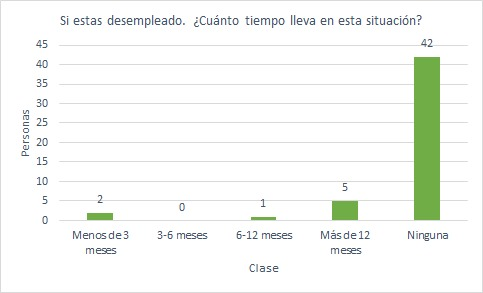

Impacto del Desempleo en la Salud Mental
en Tula de Allende, Hidalgo México
OBJETIVOS
-
Conocer cómo afecta el desempleo en la salud mental y cómo impacta en la vida cotidiana de las personas de Tula de Allende.
-
Promover recomendaciones que ayuden a resolver esta problemática. Llevando a cabo una investigación exhaustiva mediante encuestas.
-
Los hallazgos del estudio permitirán formular estrategias y políticas públicas que contribuyan a mitigar el impacto negativo del desempleo, mejorando así la calidad de vida y bienestar de los afectados.
METODOLOGÍA
-
Para este estudio, el instrumento de recolección de datos fue un formulario creado en la plataforma de google forms. Se utilizaron tablas de frecuencia y gráficas para calcular las estadísticas mediante la herramienta excel.
Pregunta 1: ¿Cuál es tu edad?
Primero se realizó la pregunta a 50 personas para saber cual es la edad de cada una de ellas.
| Clase | Limite inferior | Limite superior | Marca de clase | FA | FR | FR% | FA |
|---|---|---|---|---|---|---|---|
| Menos de 18 años | 0 | 18 | 9 | 2 | 0.04 | 4% | 2 |
| 18 - 24 años | 18 | 24 | 21 | 15 | 0.3 | 30% | 17 |
| 25 - 34 años | 25 | 34 | 29.5 | 16 | 0.32 | 32% | 33 |
| 45 - 54 años | 45 | 54 | 49.5 | 2 | 0.04 | 4% | 48 |
| 55 - 64 años | 55 | 64 | 59.5 | 2 | 0.04 | 4% | 50 |
| 65 años o más | 65 | 84 | 74.5 | 0 | 0 | 0% | 50 |
| Media | Varianza | Desviación estándar | |||||
| 13.24 | 18.54 | 4.31 |
Gráficas
Pregunta 2: ¿Cuál es tu situación laboral actual?
Se realizó la pregunta a 50 personas para saber cual es la situación laboral de las personas de Tula de Allende.
| Clase | FA | FR | FR% | FA |
|---|---|---|---|---|
| Empleado de tiempo completo | 17 | 0.34 | 34% | 17 |
| Empleado a tiempo parcial | 8 | 0.16 | 16% | 25 |
| Desempleado buscando trabajo | 2 | 0.04 | 4% | 27 |
| Desempleado no buscando trabajo | 4 | 0.08 | 8% | 31 |
| Autónomo | 6 | 0.12 | 12% | 37 |
| Estudiante | 10 | 0.2 | 20% | 47 |
| Retirado | 0 | 0 | 0% | 47 |
| Otro | 3 | 0.06 | 6% | 50 |
| 50 | 1 | 100% |
Gráficas
Pregunta 3: Si está desempleado, ¿cuánto tiempo lleva en esa situación?
Se les preguntó a las 50 personas cuanto tiempo llevan desempleadas aquellas personas que aún no tienen trabajo.
| Clase | FA | FR | FR% | FA |
|---|---|---|---|---|
| Menos de 3 meses | 2 | 0.04 | 4% | 2 |
| 3-6 meses | 0 | 0 | 0% | 2 |
| 6-12 meses | 1 | 0.02 | 2% | 3 |
| Más de 12 meses | 5 | 0.1 | 10% | 8 |
| Ninguna | 42 | 0.84 | 84% | 50 |
| 50 | 1 | 100% |
Gráficas

Pregunta 4: En las últimas dos semanas, ¿con qué frecuencia ha sentido síntomas de estrés?
Se les preguntó a las 50 personas como se han sentido referente a los sintomas de estrés en estas últimas dos semanas.
| Clase | FA | FR | FR% | FA |
|---|---|---|---|---|
| Nunca | 6 | 0.12 | 12% | 6 |
| Raramente | 8 | 0.16 | 16% | 14 |
| A veces | 21 | 0.42 | 42% | 35 |
| a menudo | 10 | 0.20 | 20% | 45 |
| Siempre | 5 | 0.10 | 10% | 50 |
| 50 | 1 | 100% |
Gráficas
Pregunta 5: En las últimas dos semanas, ¿con qué frecuencia ha sentido síntomas de ansiedad?
Se les preguntó a las 50 personas como se han sentido referente a los sintomas de ansiedad en estas últimas dos semanas.
| Clase | FA | FR | FR% | FA |
|---|---|---|---|---|
| Nunca | 12 | 0.24 | 24% | 12 |
| Raramente | 12 | 0.24 | 24% | 24 |
| A veces | 19 | 0.38 | 38% | 43 |
| A menudo | 6 | 0.12 | 12% | 49 |
| Siempre | 1 | 0.02 | 2% | 50 |
| 50 | 1 | 100% |
Gráficas
Pregunta 6: En las últimas dos semanas, ¿con qué frecuencia ha sentido síntomas de depresión?
Se les preguntó a las 50 personas como se han sentido referente a los sintomas de depresión en estas últimas dos semanas.
| Clase | FA | FR | FR% | FA |
|---|---|---|---|---|
| Nunca | 17 | 0.34 | 34% | 17 |
| Raramente | 18 | 0.36 | 36% | 35 |
| A veces | 10 | 0.2 | 20% | 45 |
| A menudo | 5 | 0.1 | 10% | 50 |
| Siempre | 0 | 0 | 0% | 50 |
| 50 | 1 | 100% |
Gráficas
Pregunta 7: ¿Ha buscado ayuda profesional para el estrés, ansiedad o depresión en el último año?
Referente a aquellas personas que respondieron que si han sufrido estrés, ansiedad y depresión, se les preguntó si han buscado algún tipo de ayuda profesional, como un psicologo o un psiquiatra.
| Clase | FA | FR | FR% | FA |
|---|---|---|---|---|
| Si | 16 | 0.32 | 32% | 16 |
| No | 34 | 0.68 | 68% | 50 |
| 50 | 1 | 100% |
Gráficas
Pregunta 8: En una escala del 1 al 10, donde 1 es nada estresante y 10 es extremadamente estresante, ¿Cómo calificaría el impacto del desempleo en su nivel de estrés?
Se les preguntó a las 50 personas que calificaran del 1 al 10 que tanto estrés sentirian al ser una persona desempleada.
| Clase | FA | FR | FR% | FA |
|---|---|---|---|---|
| 1 | 12 | 0.24 | 24% | 12 |
| 2 | 4 | 0.08 | 8% | 16 |
| 3 | 7 | 0.14 | 14% | 23 |
| 4 | 1 | 0.02 | 2% | 24 |
| 5 | 5 | 0.1 | 10% | 29 |
| 6 | 3 | 0.06 | 6% | 32 |
| 7 | 8 | 0.16 | 16% | 40 |
| 8 | 6 | 0.12 | 12% | 46 |
| 9 | 4 | 0.08 | 8% | 50 |
| 10 | 0 | 0 | 0% | 50 |
| 50 | 1 | 100% |
Gráficas

Pregunta 9: En una escala del 1 al 10, donde 1 es nada ansioso y 10 es extremadamente ansioso, ¿Cómo calificaría el impacto del desempleo en su nivel de ansiedad?
Se les preguntó a las 50 personas que calificaran del 1 al 10 que tanta ansiedad sentirian al ser una persona desempleada.
| Clase | FA | FR | FR% | FA |
|---|---|---|---|---|
| 1 | 15 | 0.3 | 30% | 15 |
| 2 | 5 | 0.1 | 10% | 20 |
| 3 | 5 | 0.1 | 10% | 25 |
| 4 | 4 | 0.08 | 8% | 29 |
| 5 | 3 | 0.06 | 6% | 32 |
| 6 | 2 | 0.04 | 4% | 34 |
| 7 | 2 | 0.04 | 4% | 36 |
| 8 | 10 | 0.2 | 20% | 46 |
| 9 | 2 | 0.04 | 4% | 48 |
| 10 | 2 | 0.04 | 4% | 50 |
| 50 | 1 | 100% |
Gráficas

Pregunta 10: En una escala del 1 al 10, donde 1 es nada deprimido y 10 es extremadamente deprimido, ¿Cómo calificaría el impacto del desempleo en su nivel de depresión?
Se les preguntó a las 50 personas que calificaran del 1 al 10 que nivel de depresión sentirian al ser una persona desempleada.
| Clase | FA | FR | FR% | FA |
|---|---|---|---|---|
| 1 | 20 | 0.4 | 40% | 20 |
| 2 | 5 | 0.1 | 10% | 25 |
| 3 | 6 | 0.12 | 12% | 31 |
| 4 | 2 | 0.04 | 4% | 33 |
| 5 | 4 | 0.08 | 8% | 37 |
| 6 | 2 | 0.04 | 4% | 39 |
| 7 | 2 | 0.04 | 4% | 41 |
| 8 | 3 | 0.06 | 6% | 44 |
| 9 | 2 | 0.04 | 4% | 46 |
| 10 | 4 | 0.08 | 8% | 50 |
| 50 | 1 | 100% |
Gráficas

CONCLUSIÓN
-
Después de realizar la encuesta, se notó que en un rango de 18 a 44 años, tomando en cuenta un promedio del 66%mujeres y 34% hombres, se notó que un 30% se siente estresado y deprimido, y un 70% no tiene ningún síntoma. En dicha encuesta se verificó y se tomó nota de que el desempleo no es un factor que afecte mayormente su estado, dando como resultado que al menos el 36% de los encuestados son afectados por temas similares. Aunque los resultados son positivos, se recabó que al menos el 32% de los encuestados acude por ayuda contra estos síntomas.
-
Dando como conclusión que al menos 8 de cada 25 personas piden ayuda a un profesional para el control de estos síntomas.